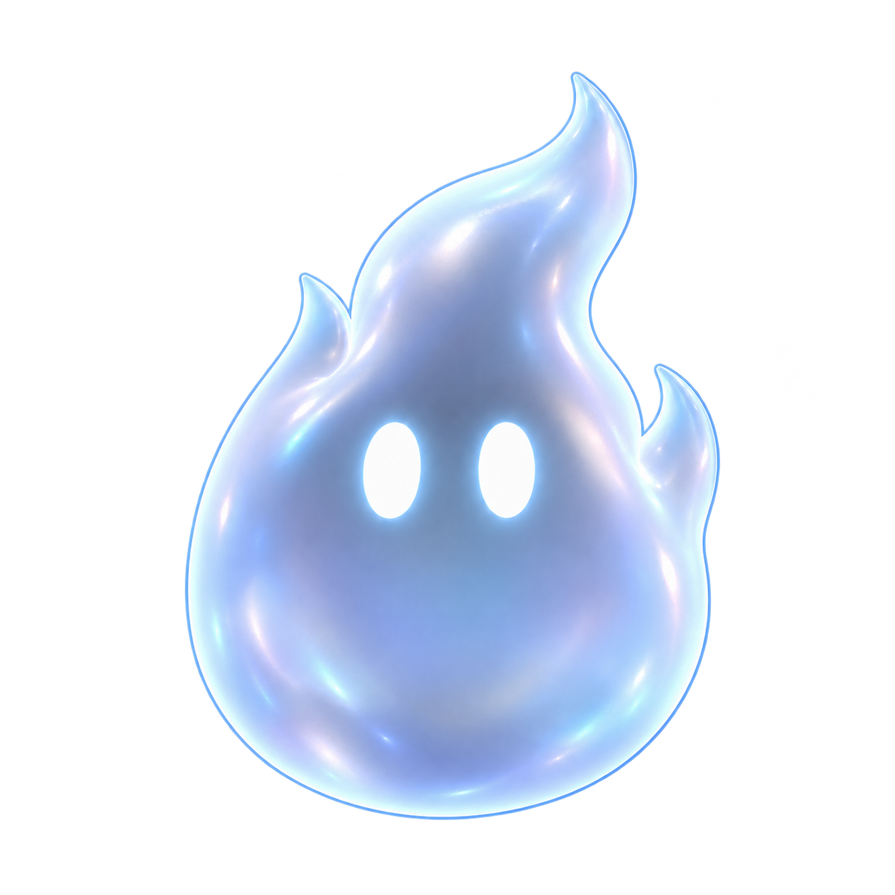
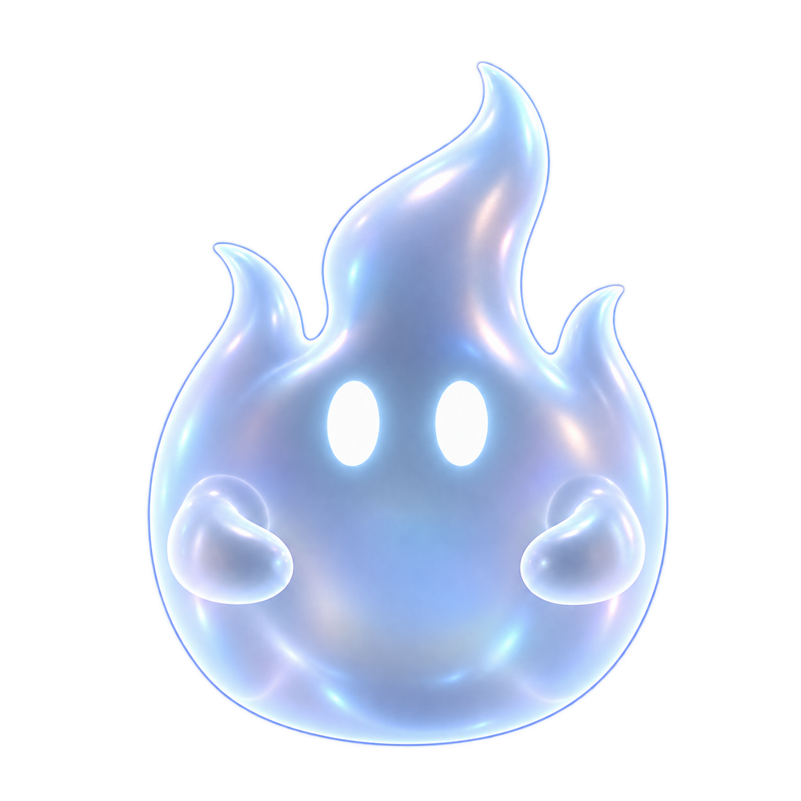
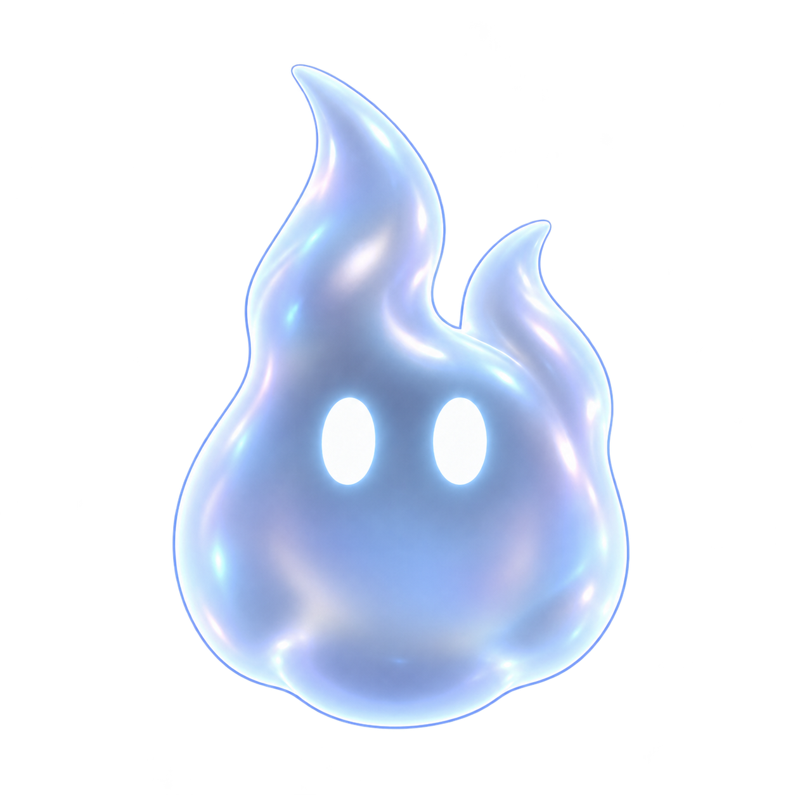
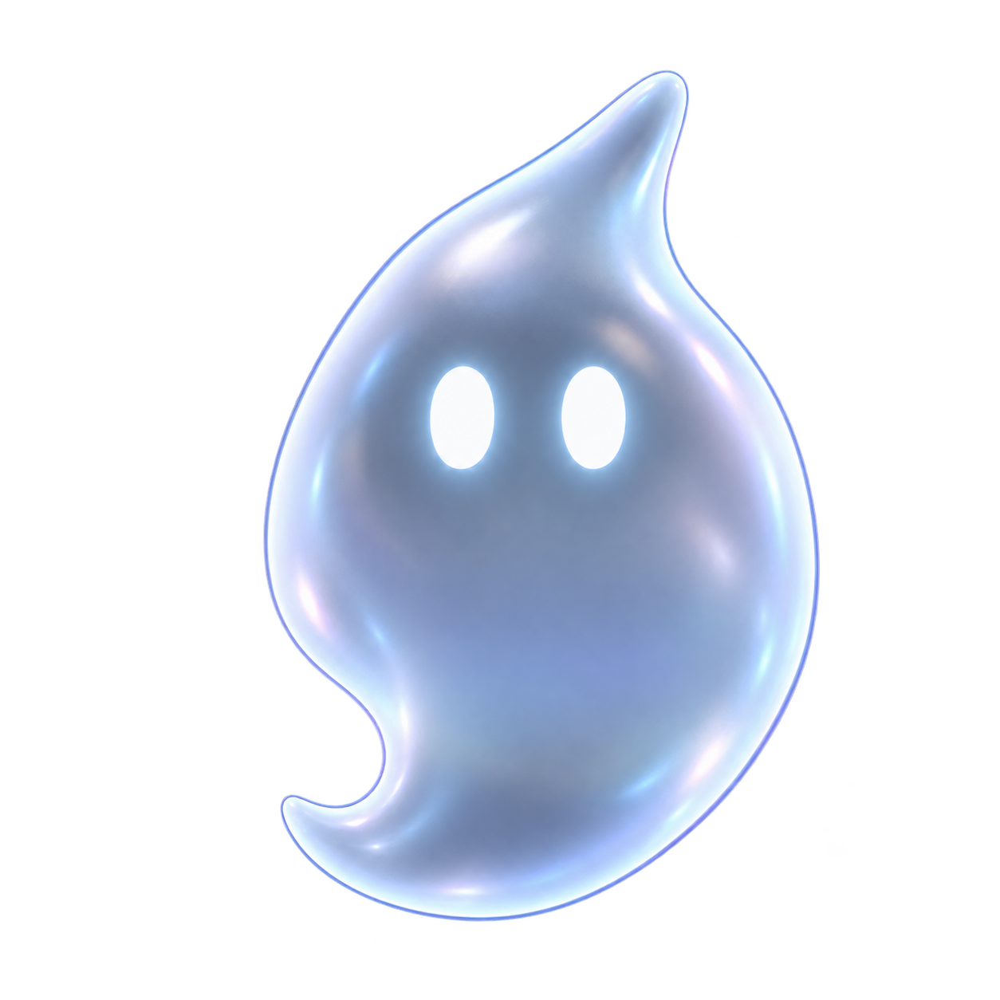

A ✓ЦЕЛЬНЫЙ ОБЪЁМ

Цельное пламя
Язычки растут из одного стеклянного объёма. Компактный персонаж без лапок.
32 px
64 px
96 px
Общий материал и глаза сохранены. Язычки поднимаются вверх, основание остаётся мягким и округлым. Утверждён вариант A; его размеры и логотипы готовы.

Язычки растут из одного стеклянного объёма. Компактный персонаж без лапок.

Огненная макушка и ручки исходного призрака. Можно будет забавно жестикулировать.

Асимметричные язычки и наклон. Для подвижного, озорного характера.

Нижний крючок и вытянутый контур делали его похожим на запятую. Оставлен для сравнения.